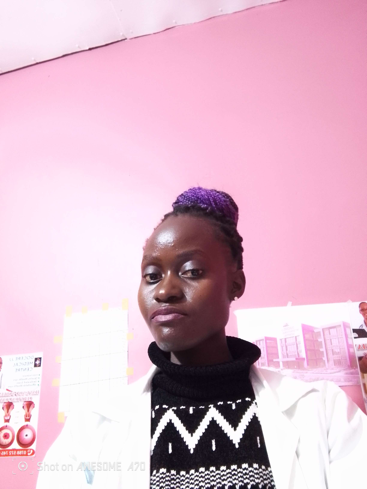
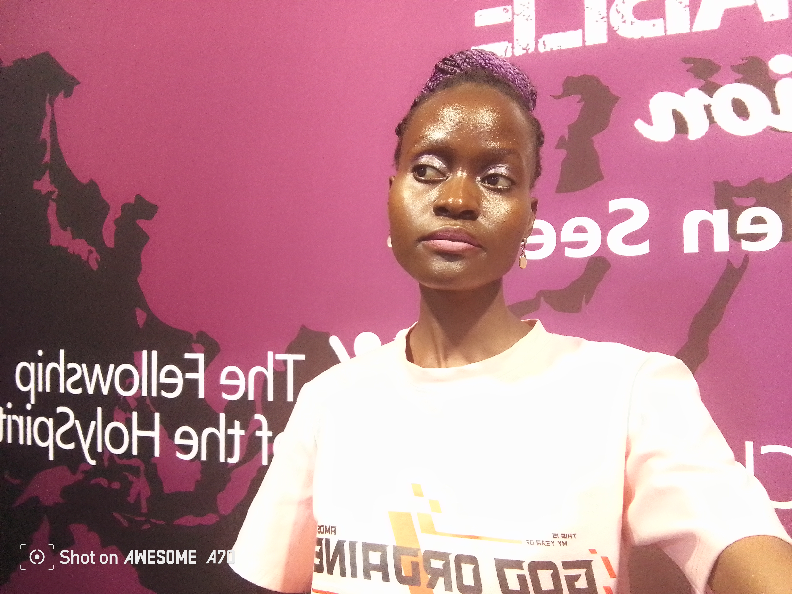

Life gets better at Docerejj.Hero Section (Homepage)
Headline:
Caring for Your Health, Close to Home
Sub-text:
Docerejj Medical Centre is committed to providing compassionate, affordable, and reliable healthcare for families in our community. From preventive care to treatment and follow-ups, we are here to support your health journey.
Book an Appointment
Visit Us Today
Call for Assistance

About Us.This is Docerejj Health ;
We are located in Central UgandaLuwero District
Docerejj Medical Centre is a community-focused health facility dedicated to improving access to quality healthcare services. We believe everyone deserves dignified, respectful, and professional care — regardless of background or income level.
Our team of qualified medical professionals offers patient-centered services designed to promote wellness, early diagnosis, and effective treatment. We aim to create a warm, friendly environment where every patient feels safe, heard, and supported.
At Docerejj
Our Services
We provide a range of essential healthcare services, including:
General Outpatient Care – diagnosis & treatment for common illnesses
Maternal & Child Health Services
Family Planning & Reproductive Health
Laboratory Testing & Diagnostics
Chronic Disease Screening & Management
Pharmacy Services
Health Education & Consultations
Your health is our priority — and we are continually expanding our services to meet the needs of our community.
Why Choose Docerejj Medical Centre?
Compassionate and dedicated medical team .
.
Affordable, transparent healthcare services.
Clean, welcoming, patient-focused environment.
Community-based approach with long-term care support
Commitment to quality, safety, and dignity

docerejj staff
Community Impact Statement:
... We offer convenience
At Docerejj Medical Centre, we are more than a clinic — we are a partner in community wellbeing. Our work supports families, promotes preventive health, and helps reduce avoidable illness through early diagnosis and education. By improving access to reliable healthcare, we aim to empower individuals and strengthen the health and resilience of our community.
Katwe Zone Luwero District Opposite Taxi Park,near Dawson Petrol Station